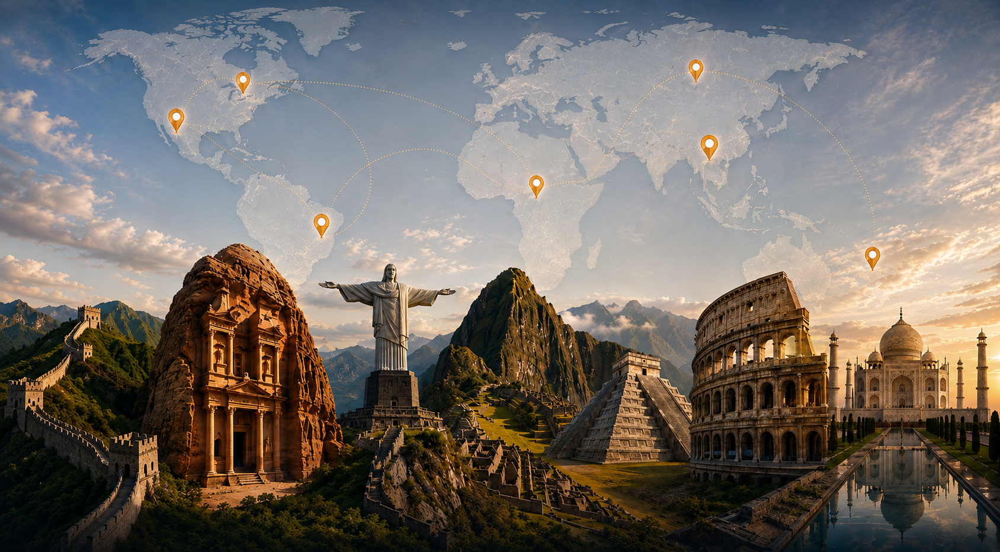
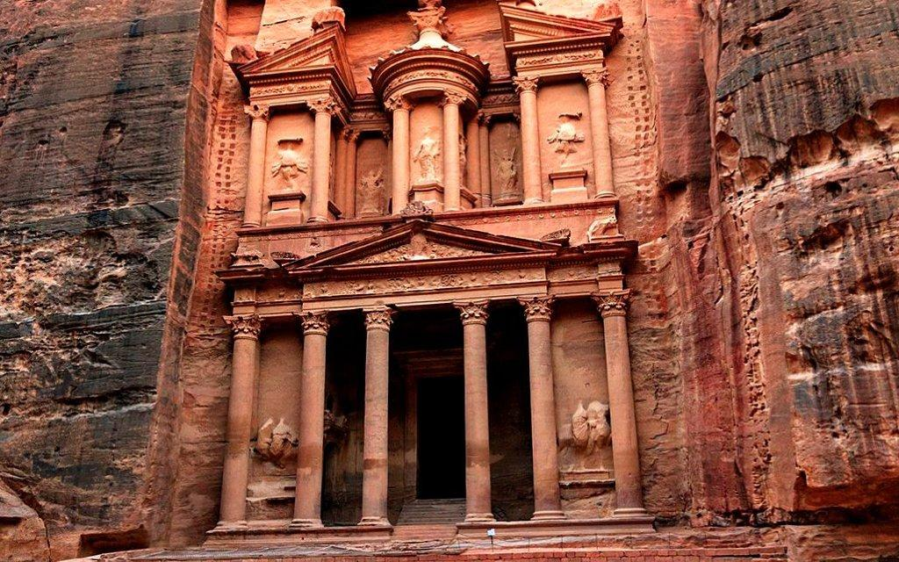
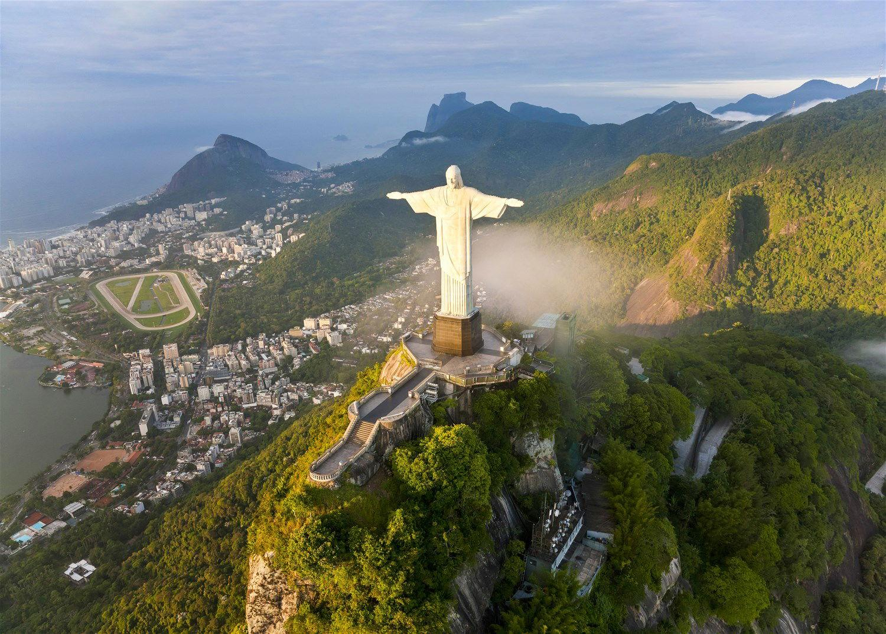
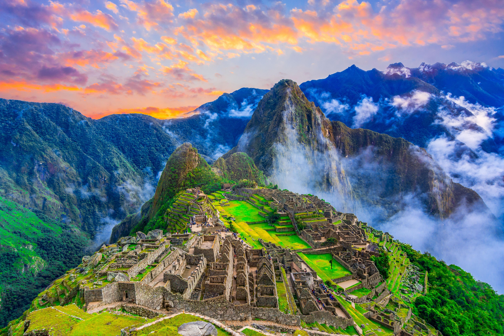
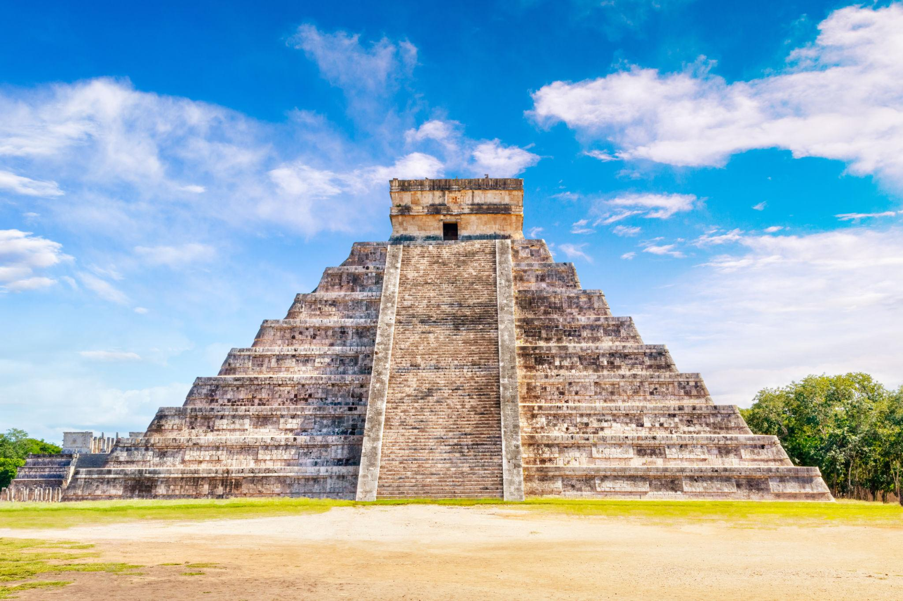
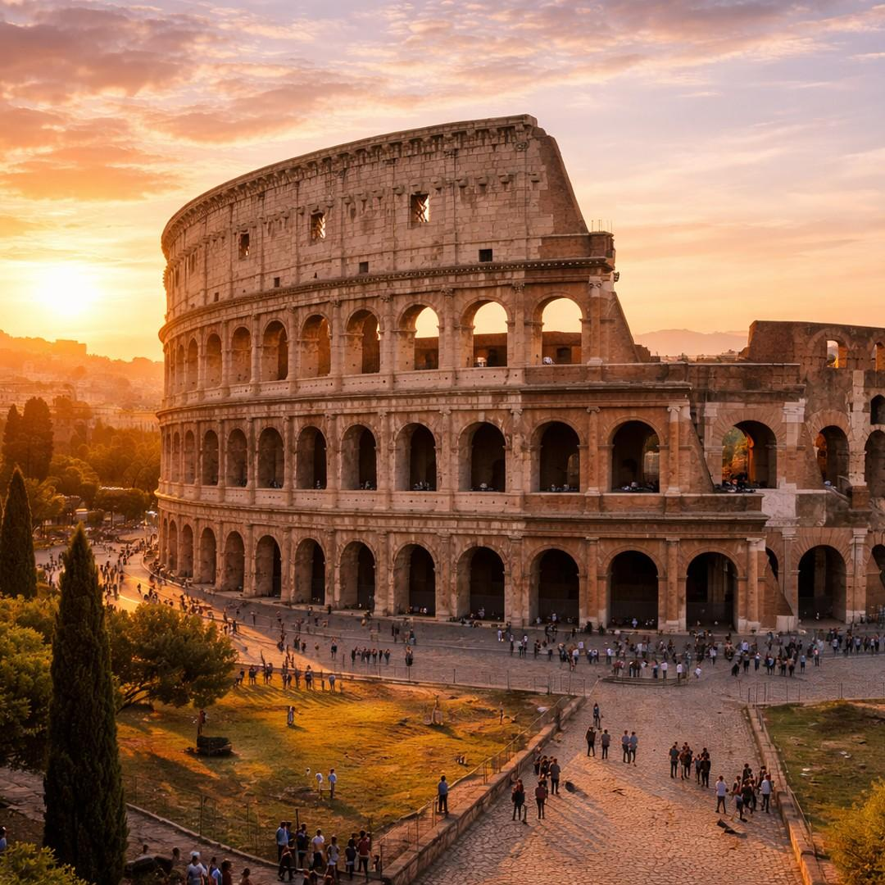
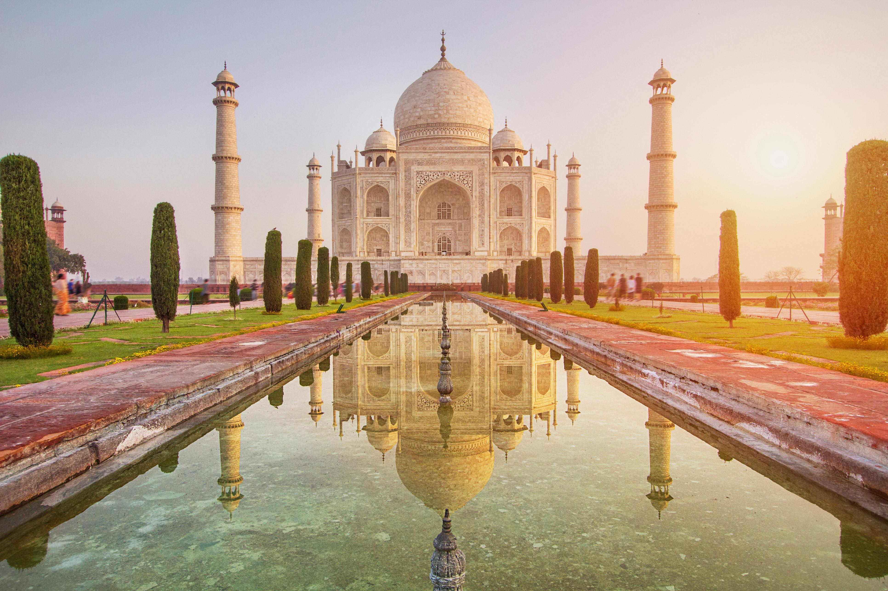

Sobre as sete maravilhas
Em 2007, milhões de pessoas ao redor do mundo participam de uma votação global para elenger as Sete Mararavilhas do Mundo Moderno. O resultado reúne monumentos que representam diferentes culturas, épocas e estilos arquitetônicos.Todos são reconhecidos por sua importância histórica, beleza e impacto cultural, recebendo milhões de visitantes todos os anos.
Saiba Mais
As 7 Maravilhas do Mundo






4
continentes
100+
milhões de visitantes/ ano
| Maravilha | Pais | Continente | Construção | Tipo | Patrimônio UNESCO |
|---|---|---|---|---|---|
| Grande Muralha da CHina | China | Ásia | Séc. VII a.C. até o Séc. XVII | Fortaleza | |
| Petra | Jordânia | Ásia | Séc. IV a.C. | Cidade Histórica | |
| Cristo Redentor | Brasil | América do Sul | 1931 | Monumento | |
| Machu Picchu | Peru | América do Sul | Séc. XV | Cidade Histórica | |
| Chichén Itzá | México | América do Norte | Séc. VI-XII | Pirêmide | |
| Coliseu | Itália | Europa | 80-d.C. | Anfiteatro | |
| Taj Mahal | Índia | Ásia | 1663 | Mausoléu |
Voce sabia?
As Sete Maravilhas estão distribuidas por 5 países e 4 continentes.
Todas as maravilhas são Patrimônios Mundial da UNESCO.
Elas recebem milhões de turistas todos os anos.
São alguns dos lugares mais fotografados do mundo.
Representam diferentes civilização e periodos da história.
Galeria de Fotos